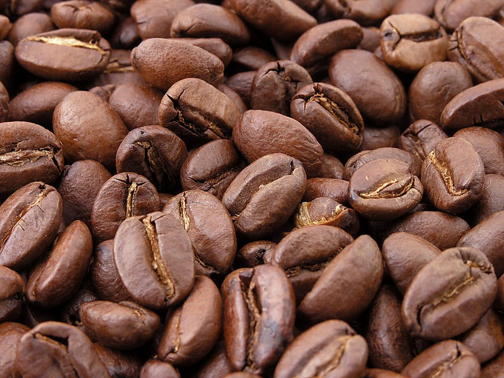
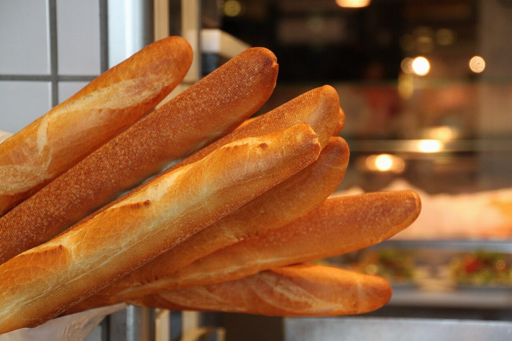
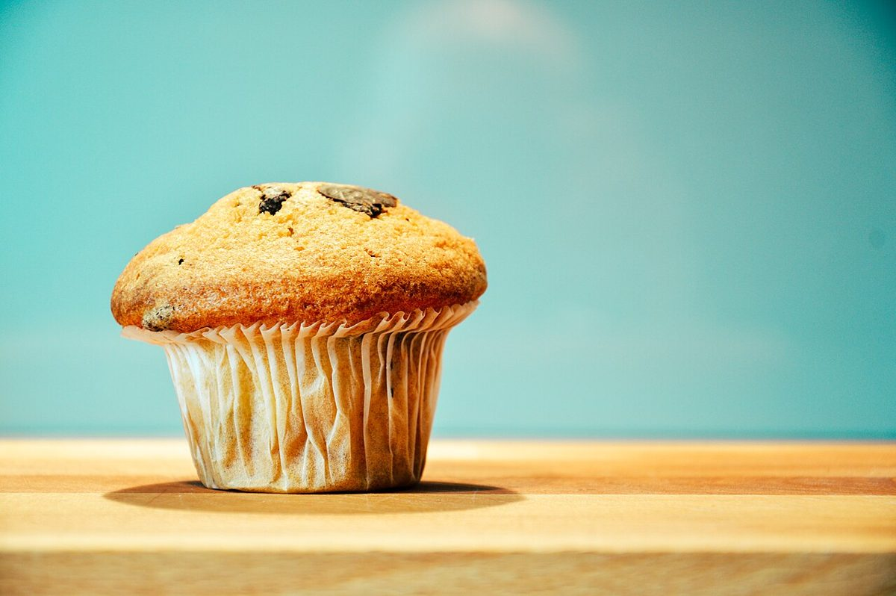

GEB
- 業種
- カフェ
- 所在地
- 山梨県北杜市高根町下黒澤3828-2
- 電話
- なし
- SNS
- @geb_hokuto
- 営業時間
- 準備中
制作側の連想
91mm × 55mm の余白
店名の由来は分かりません。制作側は、お店の情報がまだ少ない今のページを、名刺一枚(91×55ミリ)に収まる量の、空欄の多い名刺になぞらえました。分かっている欄だけ埋めて、分からない欄は空けたままにしています。このページの区切りも、その名刺の比率に合わせています。お店の理念・由来とは無関係な、制作側の連想です。
イメージ(国外・撮影地不明のフリー素材)
名刺サイズの写真4枚




写真は、このサイトの飾りとして選んだフリー素材です。お店で提供しているものを示すものではありません。
ご案内
お店のこと(確認できたものだけ)
| 所在地 | 〒408-0015 山梨県北杜市高根町下黒澤3828-2 |
|---|---|
| 電話 | なし |
| 営業時間 | 準備中 |
| 定休日 | 準備中 |
| ご予約 | 準備中 |
| 駐車場 | 準備中 |
| SNS | Instagram @geb_hokuto |